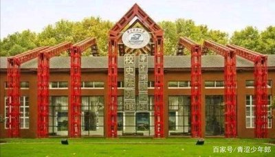
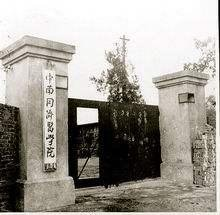
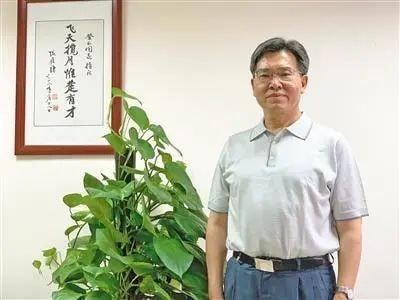

（一）红色基因与校史文化
华中科技大学在共和国旗帜下建立、成长、发展，具有鲜明的红色基因，被誉为新中国高等教育发展的缩影。校史是其大学文化建设的重要组成部分，也是大学精神凝练的源泉所在。从建校历程看，1953年10月15日，华中工学院成立，由原武汉大学、湖南大学、南昌大学、广西大学等4所大学的相关系部合并组成，之后经历了从华中工学院到华中理工大学，再到如今的华中科技大学的发展历程。其间，有周恩来等国家领导人来校视察，众多知名学者如裘法祖、张培刚等作出斐然成就，历任领导也有着颇具特色的治校办学思想，这些都构成了华中科技大学深厚的校史文化 。
（二）口述历史文化
口述历史及其相关图片、声像资料是极为宝贵的学校记忆资源。2023年9月，在校团委支持协助下，校史馆面向全校同学发起口述华科大校史志愿者招募活动。其主要内容是对亲历学校发展的老教师进行面对面访谈交流，整理加工访谈内容，形成校史文化产品。这一活动有助于填补历史空白、彰显大学精神、传承学校文化，也为同学们提供了学习锻炼机会。2023年10月完成招募，共招募42名学生志愿者，随后进行了线上、线下相关培训，11 - 12月展开访谈工作，同学们走访退休老教授，深刻感受校史厚重与鲜活，锻炼了沟通交流能力，也加深了对口述历史工作意义和价值的领悟 。
（三）科学家精神文化
1. 物质文化建设方面
- 打造科学家精神教育基地：如华中科技大学光电国家研究中心与马克思主义学院联合共建“科学家精神”课程思政实践教学基地。挖掘研究中心发展历程中的科学家故事，制作科学家短视频，以“异课同构协同育人”平台为展示窗口制作宣传视频，依托研究中心展厅呈现光电学科发展史，这些举措既为“科学家精神”课程思政教学提供案例，也为校园文化建设助力，为高校传递科学家精神提供重要支撑。
- 借助校史馆平台：校史馆除收藏、研究、陈列、展览功能外，还是校园文化建设的重要场所。华中科技大学校史展馆以裘法祖、过晋源、李赋京和姚永政等杰出科学家的优秀事迹为依托，回顾他们的人生故事。在校史馆内收集科学家的老物件进行陈列，如病例档案、手写教案、书信、照片等，让师生从中感悟科学家精神，积淀和创新校园文化，形成学校特色办学文化 。
- 丰富学校图书馆相关资料：高校图书馆是弘扬科学家精神的重要场所。华中科技大学除馆藏关于科学家精神的基础书籍外，依托杨叔子院士的学术成长资料设置专门展区，定期举办杨叔子院士图片展等宣传活动，让师生体悟其教育思想、科学精神与人文情怀 。
2. 精神文化建设方面
- 强化多方合力培育科学家精神：以科学家精神为内核完成高校立德树人、培根铸魂育人目标，需要激发高校每位教职工的潜力，形成分工明确、相互策应、多方配合的合力体系，更好地使科学家精神融入大学生的理想信念与实践行动。其中，思政课教师要发挥育人的主导作用，调动其积极性、主动性与创造性2。
（四）校训与办学理念文化
华中科技大学秉持“明德厚学，求是创新”的校训和“育人为本，创新是魂，责任以行”办学理念，严谨的学风使其荣获“学在华工”的美誉